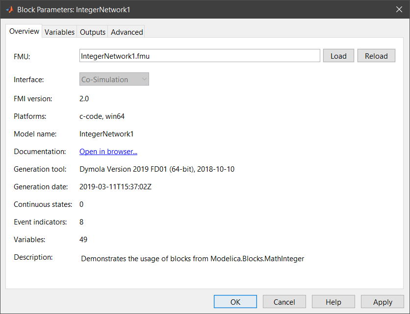
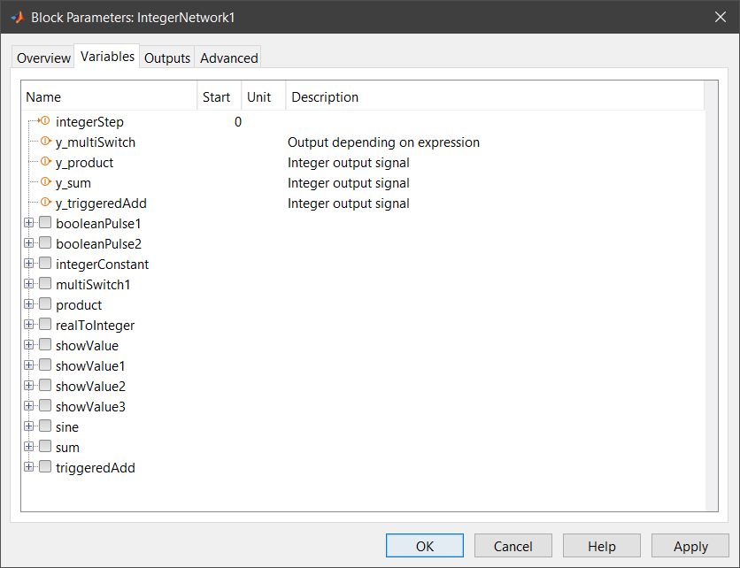
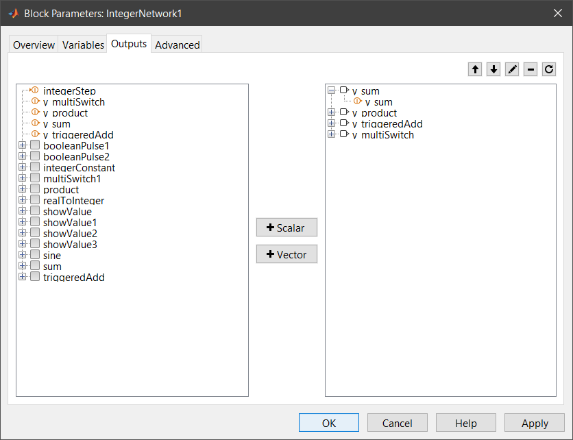
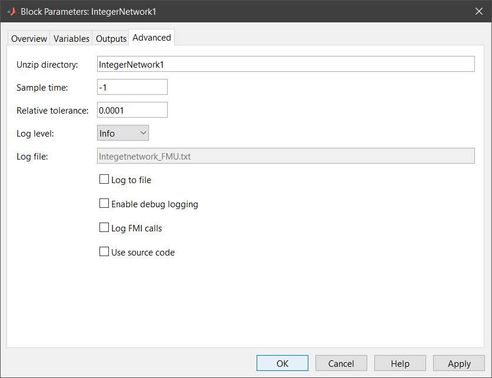

The following sections describe how to import and configure FMUs in Simulink models with FMI Kit.

The FMU is automatically extracted to the directory specified under Advanced > Unzip Directory. This directory must remain in the same relative path when the model is moved to different directory or machine.
For FMI 2.0 FMUs that support both model exchange and co-simulation the interface type can be selected.

The Variables tab shows all variables of the FMU. Input variables are marked with an arrow on the left, output variables with an arrow on the right of the icon.
The start value, unit and description of the variable (if provided) are displayed in the Start, Unit and Description columns.
To change the start value of a variable click into the respective field in the Start column and enter an expression that evaluates to the respective type of variable. Changed start values are indicated by bold text. To reset the start value to its default simply clear the Start field.
| Icon | Variable Type | Example |
|---|---|---|
| Real | 2*pi |
|
| Integer | -11 |
|
| Boolean | true |
|
| Enumeration | 3 |
|
| String | 'C:\Temp\Resources' |
To get the start value for the variable step for the current block in MATLAB enter
step = FMIKit.getStartValue(gcb, 'step')
to set the start value enter
FMIKit.setStartValue(gcb, 'step', 'true')

By default the block has the output ports defined by the FMU.
On the advanced tap you can change additional settings for the FMU block

The folder where the FMU is extracted. The path can be absolute or relative to the model file. To use a custom path change this field before loading an FMU.
The sample time for the FMU block (use -1 for inherited)
The relative tolerance for a Co-Simulation FMU (use 0 for the default tolerance).
The lowest status code that is logged.
Redirect the log messages to this file if Log to File is checked.
Enable the FMU's debug logging.
Log all FMI calls to the FMU.
If checked a source S-function sfun_<model_name>.c is generated from the FMU's source code which gets automatically compiled when the Apply or OK button is clicked. For FMI 1.0 this feature is only available for FMUs generated with Dymola 2016 or later.
With source code FMUs it is also possible to use FMUs in Rapid Accelerator mode and create target code for RSIM, GRT, ds1005, ds1006 Scalexio platforms.
Use FMIKit.getModelDescription() to retrieve information about an FMU without loading or extracting it.
md = FMIKit.getModelDescription('BooleanNetwork1.fmu')
Use FMIKit.getStartValue() to get the start values of an FMUs variables:
step = FMIKit.getStartValue(gcb, 'step')
To set the start values for one or more variables use FMIKit.setStartValue().
FMIKit.setStartValue(gcb, 'step', true, 'y', 'sqrt(2)')
sets the start value of variable step to true and y to sqrt(2). Start values can be logical, double, int32 or expressions.
FMIKit.setStartValue(gcb, 'step', [])
resets the start value of variable step to its default start value.
FMIKit.setStartValue(gcb, 'u', [1 2 3]')
sets the variables u[1] = 1, u[2] = 2 and u[3] = 3.
FMIKit.setStartValue(gcb, 'table', [1 2 3; 4 5 6])
sets the variables table[1,1] = 1 ... table[2,3] = 6.
With FMIKit.loadFMU() an FMU can be (re)loaded by the FMU block.
FMIKit.loadFMU(gcb, 'Controller.fmu')
loads the FMU Controller.fmu into the current FMU block.
Use FMIKit.setOutputPorts() to change the output ports of an FMU block.
The following commands add the variable x as a 1x1 output port out1 and the variables y1 and y2 as a 2x1 output port out2 to the current block.
ports.label = 'out1';
ports.variables = { 'x' };
ports(2).label = 'out2';
ports(2).variables = { 'y1', 'y2' };
FMIKit.setOutputPorts(gcb, ports)
Use FMIKit.setSourceCode() to use FMU's source code (if available):
FMIKit.setSourceCode(gcb, true)
Use FMIKit.setRelativeTolerance() to set the relative tolerance for the embedded solver of a Co-Simulation FMU:
FMIKit.setRelativeTolerance(gcb, '1e-3')
The S-function sfun_fmurun associated to the FMU block loads and connects the FMU to Simulink's simulation loop by setting its inputs and retrieving its outputs.
The S-function's mdl* callbacks in which the respective FMI functions are called depend on the interface type of the FMU and are described below.
For Co-Simulation all input variables are set in mdlUpdate and all output variables are retrieved in mdlOutputs. Direct feedthrough is disabled for all input ports.
For Model Exchange direct feedthrough is enabled for an input port if any output variable declares a dependency on the corresponding input variable in the <ModelStructrue>.
If any internal variable is added to the outputs of the FMU block direct feedthrough is enabled for all input ports.
Input variables with direct feedthrough enabled are set in mdlDerivatives, mdlZeroCrossings and mdlOutputs.
In mdlUpdate all input variables are set.
The information from the block dialog is stored in the parameter UserData of the FMU block:
>> ud = get_param(gcb, 'UserData')
ud =
fmiKitVersion: '2.4'
fmuFile: 'Rectifier.fmu'
fmuLastModified: 1.5548e+12
unzipDirectory: 'Rectifier'
runAsKind: 1
sampleTime: '-1'
inputPorts: [0x0 struct]
outputPorts: [1x4 struct]
startValues: [0x1 containers.Map]
debugLogging: 0
errorDiagnostics: 'ignore'
useSourceCode: 0
setBlockName: 0
functionName: 'sfun_fmurun'
parameters: [1x252 char]
>> ud.outputPorts(2)
ans =
label: 'iAC'
variables: {'iAC[1]' 'iAC[2]' 'iAC[3]'}
| Field | Type | Description |
|---|---|---|
fmiKitVersion |
char |
FMI Kit version that imported the FMU |
fmuFile |
char |
Path to the imported FMU |
fmuLastModified |
double |
Last modification data of the FMU |
unzipDirectory |
char |
Path to the extracted FMU |
runAsKind |
int |
The FMI Type of the FMU (0 = Model Exchange, 1 = Co-Simuliation) |
sampleTime |
char |
The sample time of the block |
relativeTolerance |
char |
Relative tolerance for the solver of co-simulation FMUs |
inputPorts |
struct |
Struct that holds the input ports and associated variables |
outputPorts |
struct |
Struct that holds the output ports and associated variables |
startValues |
containers.Map |
Map of variable names -> start values |
debugLogging |
bool |
Enable debug logging on the FMU instance |
errorDiagnostics |
char |
Diagnostics level ('ignore', 'warning', 'error') |
useSourceCode |
bool |
Compile the FMU from source code |
functionName |
char |
Name of the S-function |
parameters |
char |
Parameters for the S-function |